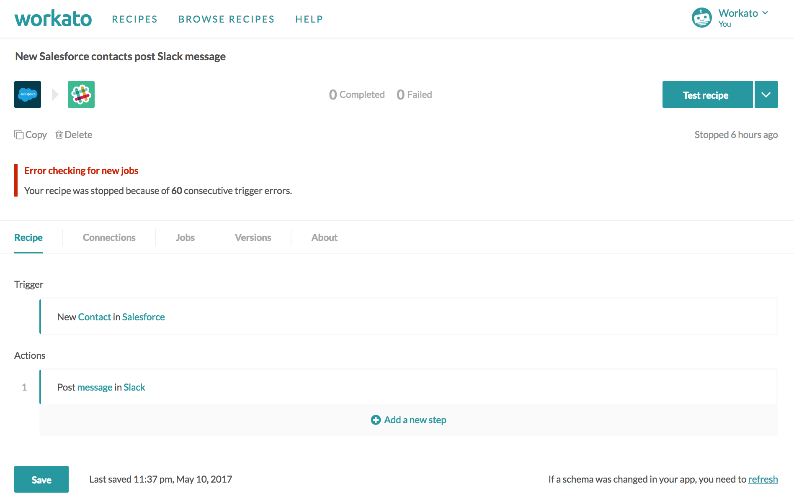
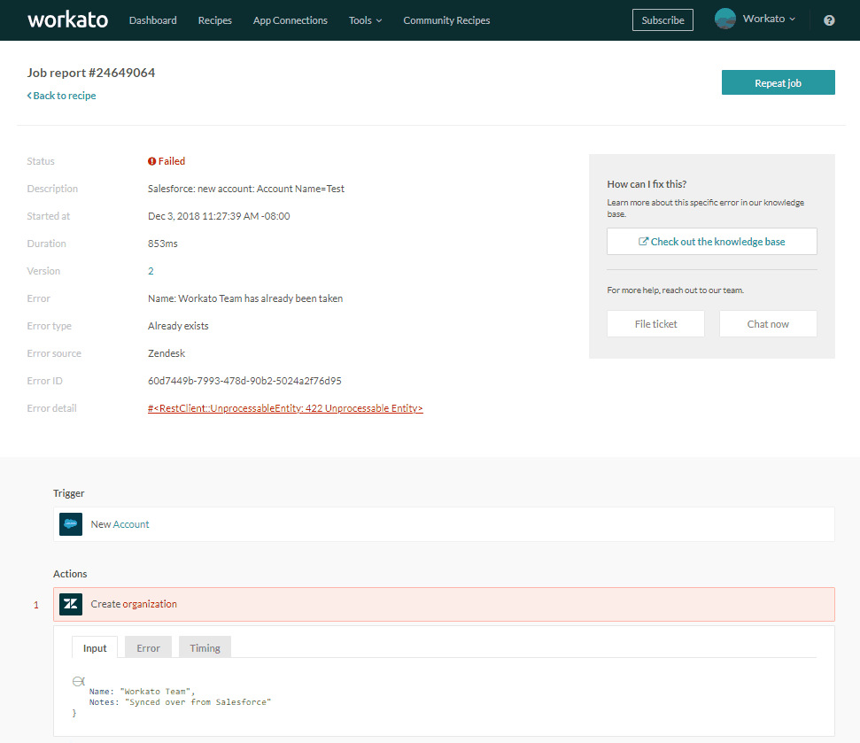
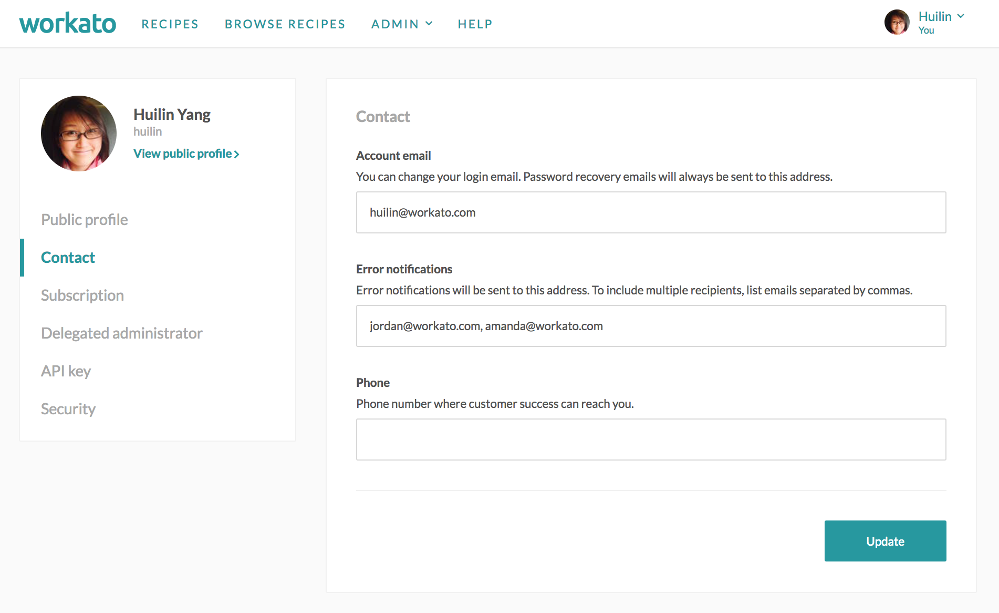

Errors
Jobs may encounter errors when trying to fetch trigger events, or when trying to carry out an action. There are 2 main types of errors a job may encounter - this article explains both errors and how they can be resolved.
Trigger errors
Trigger errors occur when the recipe tries to retrieve trigger events by polling the trigger app. The recipe might fail to retrieve trigger events in the following cases:
- When the connection becomes invalid and the recipe is unable to connect successfully to the app. Usually results in an unauthorized error message.
- When the connected user does not have the right permissions to retrieve the trigger events. Usually results in an unauthorized error message.
- When the recipe makes an API call that is somehow broken, e.g. due to schema changes in the app that wasn't reflected in the recipe via a schema refresh.
- When the recipe makes an API call that times out while waiting for the trigger events. This is usually transient, i.e. the API server might be experiencing temporary downtime.
- When the trigger filters put in place are logically incorrect, e.g. when a null value is checked against an integer, etc. In such cases, the trigger filters will need to be fixed before the recipe can run properly.
Trigger warnings
When a trigger error is met, the recipe will surface a trigger warning, but continue to poll for trigger events. No failed jobs will be reflected on the jobs report, because no jobs were created - the recipe was unable to even retrieve any trigger events to be processed.
In the following case, a trigger warning was raised because the schema recorded in the recipe did not match the schema in the app. The warning suggests refreshing the schema as a way to resolve the trigger error, and further details of the error can be seen when expanded.
 Trigger warning surfaced on the recipe due to outdated schema that needs refreshing
Trigger warning surfaced on the recipe due to outdated schema that needs refreshing
Recipes stopped by Workato
When the recipe has encountered 60 trigger errors, it will be stopped by Workato automatically under the assumption that there's a critical, non-transient error with the trigger configuration or connection that needs to be fixed.
 Recipe stopped due to 60 trigger errors
An email notification will be sent to the Workato account owner when a recipe is stopped due to 60 trigger errors.
Action errors
Action errors occur when the recipe tries to carry out an action, e.g. trying to create a new lead record, or trying to search for a specific account in Salesforce, and fails to do so. Actions might fail in the following cases:
- An invalid input was provided to the app, e.g. a number was expected for an invoice subtotal amount but a string (text) was passed in instead, or the values "High", "Medium" and "Low" were expected values, but the value "Normal" was passed in instead
- An input was required, but when the job was carried out, a null value was passed into the field
In cases of action errors, the Input tab shows the data passed into the action, while the Output tab usually shows the error message. You can usually figure out what's wrong by checking the data in the input tab.
 Job error as shown in job details page
Recipes stopped by Workato
When the recipe encounters 5 successive action errors that are identified by Workato as an unauthorized error, rate limit error or schema error, the recipe will be stopped by Workato automatically under the assumption that there's a critical, non-transient error with the action configuration or connection that needs to be fixed.
Error notifications
Workato sends email notifications to the Workato account owner by default when errors occur.
Notification policy
There are certain rules that determine when an email is sent:
- Email is sent when a recipe encounters a certain type of error for the first time, e.g. unauthorized, timeout. Subsequent errors of the same type that occur for that same recipe in the following 1 hour will not generate an email notification.
- Email is sent whenever a recipe is stopped by Workato.
Customizing notification recipients
By default, the error notification emails are always sent only to the Workato account owner. But if you have a team or consultants monitoring the integrations for you, you can always add their emails to be notified as well.
You can do so by going to Settings > Contact and editing the Error notifications field.
 Configuring email addresses to send error notifications to